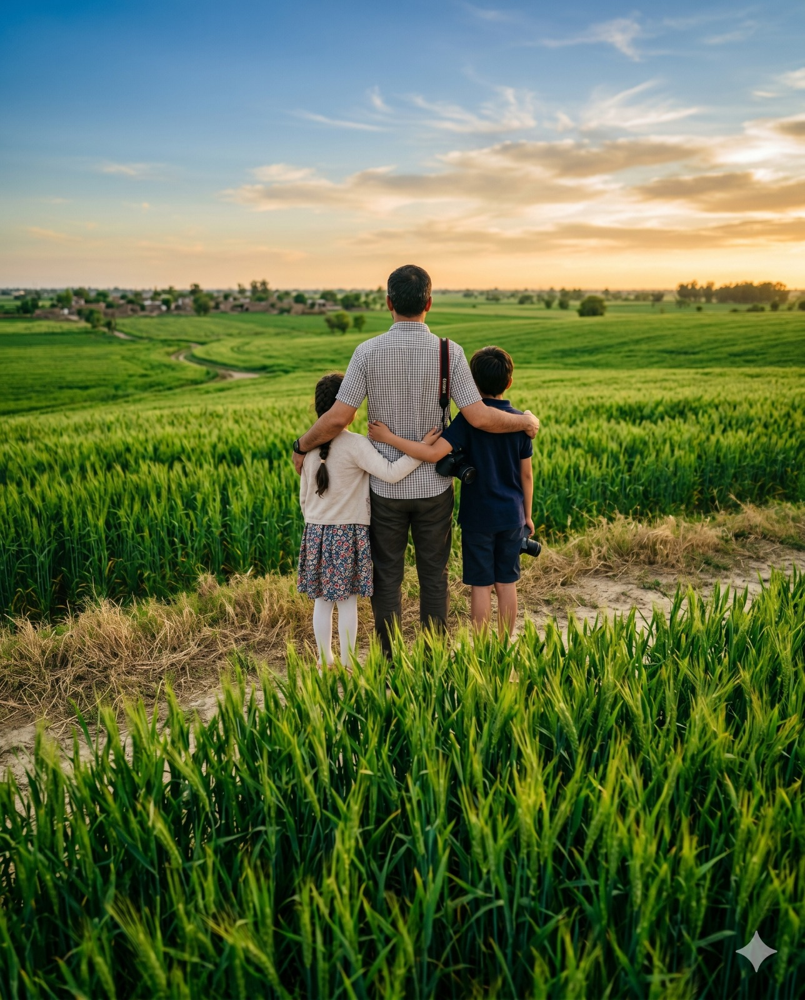

01
Our Story
In 2008, Mohammad Nasrullah was looking at various investments in pakistan, when he came across this idea of dairy farm. Other investers specially Mr. Salman encourage him to invest in agriculture and farm sector in pakistan. Thus began a journey to modernize animal rearing and milking business in pakistan and to bring the highest quality and the most freshed milk to customers in lahore.
What started as a tiny herd and a smallest of areas has now become 250+ animals and 5 acres of land. Helping Mr. Nasrullah and Mr. Salman dream become a reality.
That look is why Living Dairies exists.